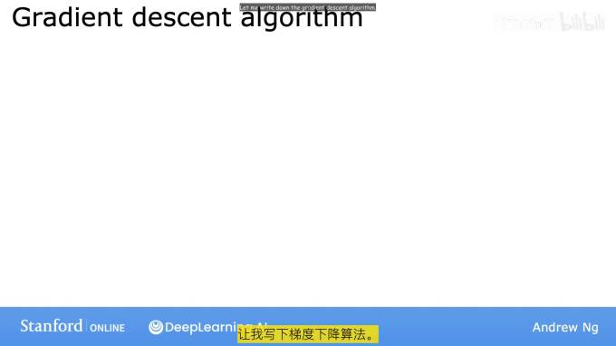
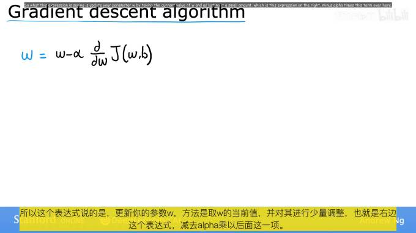
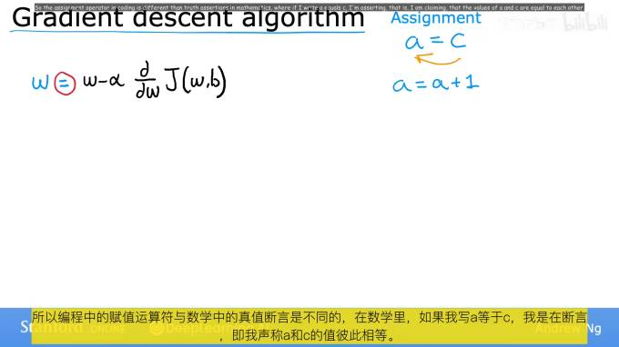
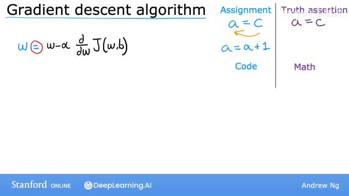
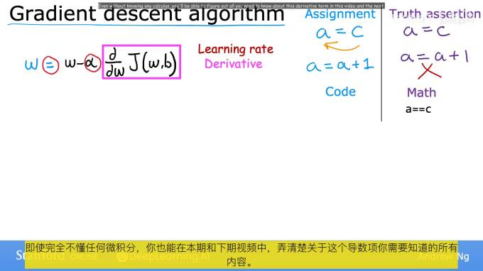
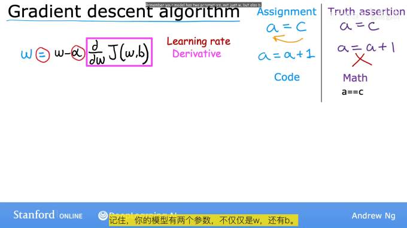
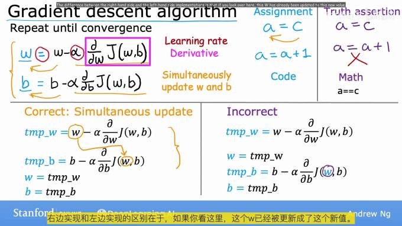

我们来看看如何实际实现梯度下降算法。00:05

让我写下梯度下降算法。00:10

在每一步中，参数 w 会被更新为 w 的旧值减去 alpha 乘以这一项，即代价函数 J 括号 w，b 对 w 的偏导数。00:16
所以这个表达式说的是，更新你的参数 w，方法是取 w 的当前值，并对其进行少量调整，也就是右边这个表达式，减去 alpha 乘以后面这一项。00:31


好的，如果你觉得这个等式里有太多内容，没关系。00:48
首先，这里的这个等号记法。01:00
注意，我说过我们用这个等号来给 w 赋值。01:03
所以在这里，这个等号是赋值运算符。01:09
具体来说，在这种语境下，如果你写代码 a 等于 c，意思是取 c 的值，并将其存储到电脑的变量 a 中。01:14
或者如果你写 a 等于 a 加一，意思是将 a 的值设为 a 加一，即将 a 的值增加一。01:26
所以编程中的赋值运算符与数学中的真值断言是不同的，在数学里，如果我写 a 等于 c，我是在断言，即我声称 a 和 c 的值彼此相等。01:37


而且希望我永远不会写一个真值断言 a 等于 a 加一，因为你知道，那根本不可能是真的。01:54
所以在 Python 和其他编程语言中，真值断言有时会写成双等号。02:04
所以你可能会看到代码写 a 双等于 c，如果你在测试 a 是否等于 c。02:12
但在数学记法中，正如我们通常使用的，比如在这些视频里，等号既可以用于赋值，也可以用于真值断言。02:18

所以当我写等号时，我会尽量说清楚我们到底是在给变量赋值，还是在断言两个值相等的真值。02:29

现在，让我们更深入地了解这个等式中各个符号的含义。02:41
这里的符号是希腊字母 alpha。02:47
在这个等式中，alpha 也被称为学习率。02:51
学习率通常是一个介于零和一之间的较小的正数。02:57
alpha 的作用是，它基本上控制了你下山时迈出的步子有多大。03:06
如果 alpha 非常大，那对应的是一个非常激进的梯度下降过程，你会试图迈出巨大的步幅下山。03:13
而如果 alpha 非常小，那你就会迈着小碎步下山。03:22
我们稍后会回来更深入地探讨如何选择一个好的学习率 alpha。03:28
最后，这一项是代价函数 J 的导数项。03:34
我们现在先不深究这个导数的细节，但稍后你会了解更多关于导数项的内容。03:41
但就目前而言，你可以把我在洋红色框中标注的这个导数项，看作是告诉你想要朝哪个方向迈出你的一小步。03:48

再结合学习率 alpha，它也决定了你下山时步幅的大小。04:00

现在，我的确想提一下，导数来自微积分。04:08
即使你不熟悉微积分，也别担心。04:13
即使完全不懂任何微积分，你也能在本期和下期视频中，弄清楚关于这个导数项你需要知道的所有。04:17

记住，你的模型有两个参数，不仅仅是 w，还有 b。04:28

因此你也有一个更新参数 b 的赋值操作，看起来非常相似。04:33
b 被赋值为 b 的旧值减去学习率 alpha 乘以这个稍有不同的导数项，即 J 括号 w，b 对 b 的偏导数。04:40
还记得在曲面图上，你正迈着小碎步直到抵达山谷底部吗？04:54
对于梯度下降算法，你会重复这两个更新步骤，直到算法收敛。05:02
我所说的收敛，是指你到达了局部最小值那个点，在此之后，参数 w 和 b 不再随着你每多走一步而发生大大变化。05:09

现在，关于如何正确实现梯度下降，还有一个更微妙的细节。05:21

你要更新两个参数，w 和 b，对吧？05:27
所以这个更新对两个参数 w 和 b 都会发生。05:32
一个重要的细节是，对于梯度下降，你需要同时更新 w 和 b，意思是你想在同一时间更新这两个参数。05:37


我这么说的意思是，在这个表达式中，你要将 w 从旧 w 更新为新 w。05:51
同时你也在将 b 从其旧值更新为 b 的新值。06:00
而实现的方法是计算右侧，为 W 和 B 计算出这个东西，并在同一时刻，同时将 W 和 B 更新为新值。06:06
那么，我们来看看这意味着什么。06:22
这是实现梯度下降的正确方式，即执行同时更新。06:25
这将一个变量 temp_w 设为那个表达式，也就是 w 减去这一项。06:31
我们再设另一个变量 temp_b，等于那个，即 b 减去这一项。06:39
这样你计算了两个右侧，算出了两个更新值，并把它们存入变量 temp_w 和 temp_b 中。06:46
然后你把 temp_w 的值复制给 w，再把 temp_b 的值复制给 b。06:56
现在，你可能注意到的一点是，这里的 w 值是 w 被更新之前的值。07:06
这里，请注意，进入导数项的是更新前的 w，明白了吗？07:15
相比之下，这里有一个不正确的梯度下降实现，它没有执行同时更新。07:23
在这个不正确的实现中，我们计算 temp_w，和之前一样。07:30
现在，情况开始有所不同了。07:39
我们在为另一个参数 b 计算新值之前，就先用 temp_w 中的值更新了 w。07:42
接下来，我们计算 temp_b 等于 b 减去这一项。07:51
最后，我们用 temp_b 中的值更新 b。07:58
右边实现和左边实现的区别在于，如果你看这里，这个 w 已经被更新成了这个新值。08:03

而正是这个更新后的 w，实际进入了代价函数 J 括号 w，b 中。08:13
这意味着，右边这里的这一项，和你在左边看到的这一项，并不相同。08:20
那也意味着，右边这个 temp_b 项，和左边的 temp_b 项也不完全相同。08:28
因此，右边更新后的 b 值，和左边变量 b 更新后的值也不相同。08:37
用代码实现梯度下降时，实际上采用正确的同时更新方式实现起来更自然。08:46
当你听别人谈论梯度下降时，他们总是指执行参数同时更新的梯度下降。08:57
然而，如果你要实现非同时更新，结果多半也能差不多工作，但这样做并非真正正确的实现方式。09:05
这其实是某种具有不同性质的其他算法。09:17
所以，我建议你坚持正确的同步更新，不要使用右边这个不正确的版本。09:21
那么，这就是梯度下降。09:30
在下期视频中，我们将详细探讨导数项，你在本期视频中看到过，但我们并未真正详细讨论。09:32
导数是微积分的一部分。09:42
再强调一次，如果你不熟悉微积分，别担心。09:44
你完全不需要懂微积分就能完成这门课或这个专项课程，你将拥有实现梯度下降所需的全部信息。09:49
在接下来的下期视频中，我们会一起过一遍导数，而你将会带着自己实现和应用梯度下降所需的直觉和知识离开。10:00
我认为，知道如何实现这个，对你来说会是件激动人心的事。10:12
那么，让我们进入下期视频，看看具体怎么做。10:18